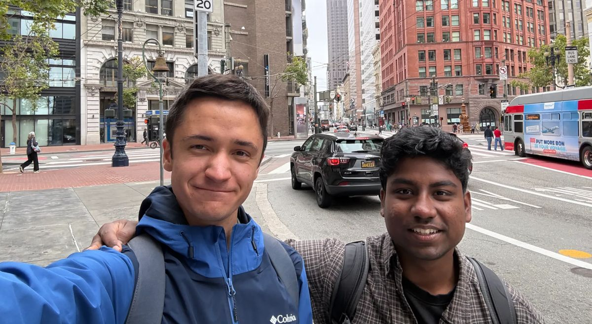

Generate synthetic traces that mimic your production environment, without exposing a single real trace.
Supported by angels and scouts from OpenAI, Anthropic, Amazon, General Catalyst, a16z, and Lyceum.
Real trace in → synthetic trace out
Same structure, same failure mode, an entirely new synthetic trace.
Processed in memory with your own models. Never store logs and no extra data processors.
Production traces are how teams build evals. But when your data is sensitive, no one can read them, so teams fly blind or pay people to hand-write fake traces that look nothing like production.
Built from all of your real traffic, not a hand-picked subset.
No one ever reads a real user's trace. What you evaluate on is synthetic from the start.
It runs in front of your agent and writes synthetic traces to Braintrust, Langfuse, LangSmith, or Raindrop.
No customer data ever reaches our servers, so there's nothing new for security to sign off on.

Boris (left) and Lohith (right).
Boris Goranov
Built the inference stack at a neocloud and moved production agents onto open-weight models. Before that, Google, Amazon and J.P. Morgan; systems research at ETH Zurich, published at SOSP.
View LinkedIn →Lohith Yadala Chanchu
Published at ICML, ICLR and TMLR on getting models to check their own work. Built and sold the support agents now running on 20,000+ EV chargers. Before that, Qualcomm, JetBrains and Mercura (YC W25).
View LinkedIn →Prefer email? lohith@orizon.fun